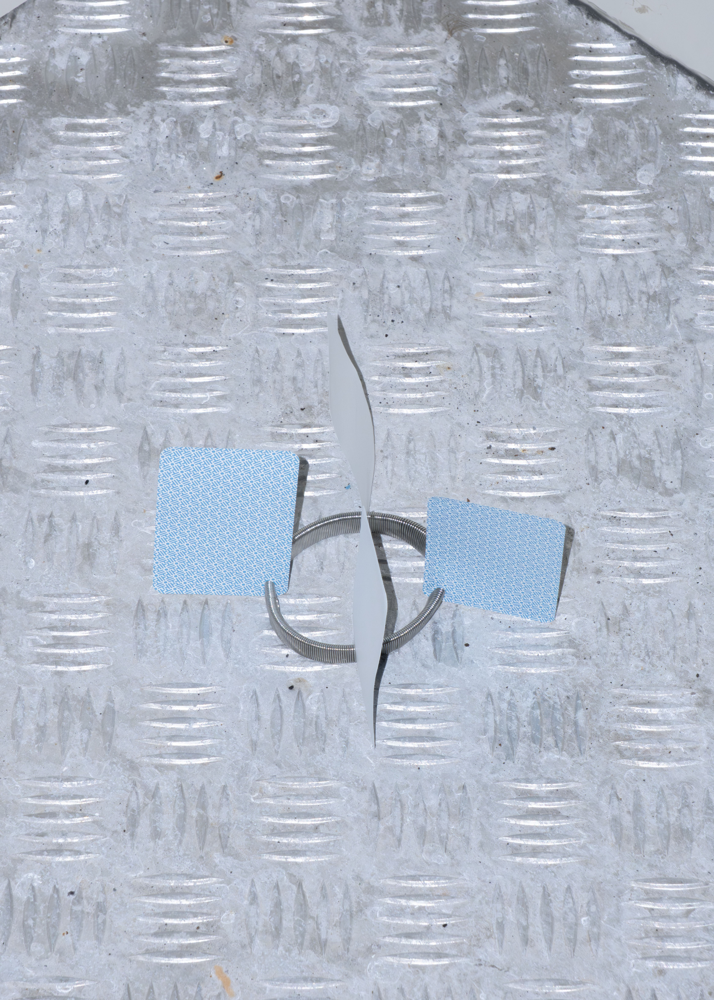
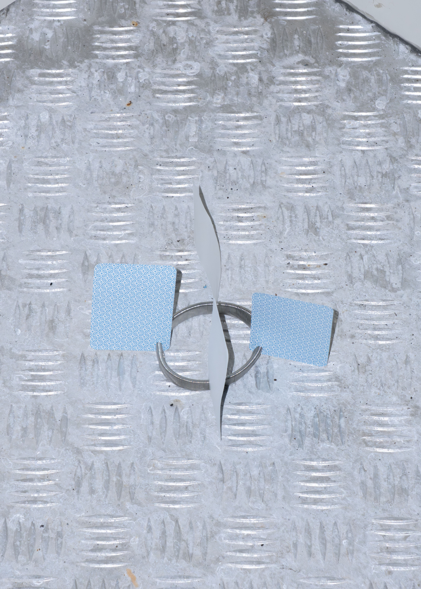
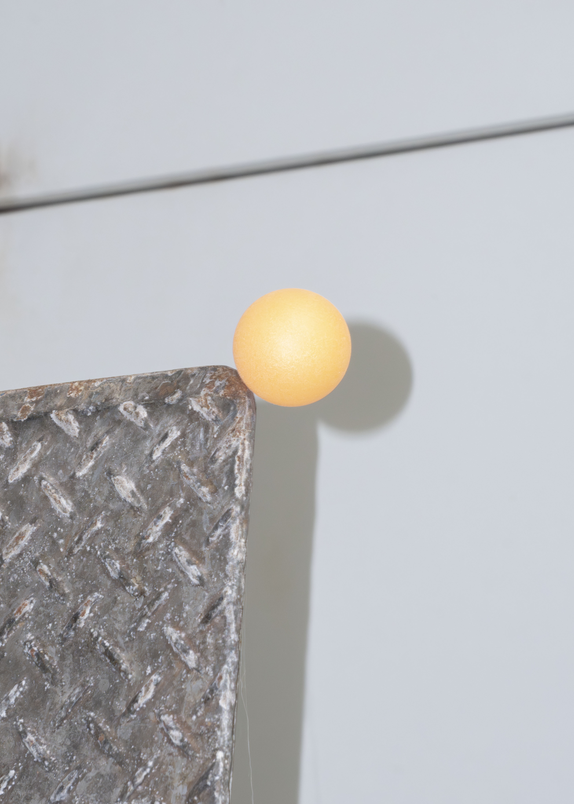
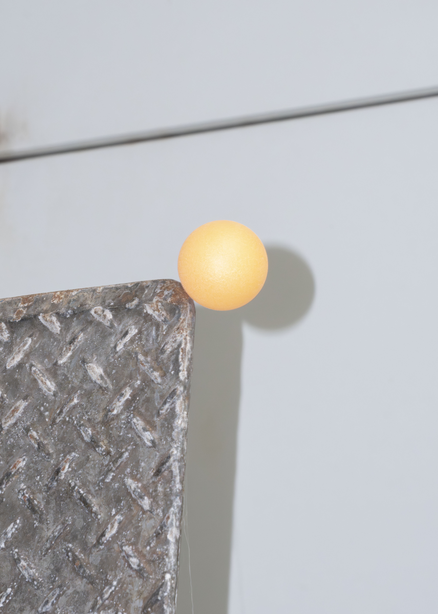

Construction・Backyard
多摩美術大学創立9O周年記念事業 EXPLOSION & EXPANSION 爆発と拡張 ―― 多摩美術大学の制作の現場から 《 Construction・Dining》《 Construction・Backyard》は、統合デザイン学科の荒牧悠先生による演習授業「コンストラクション」を発端に、学生の自主的活動として発展した。本展では、キッチン用品やホームセンターにある名もなきパーツが机に並び、ダイニングテーブルを囲むようにレモラのメンバーと来場者が集まり、即興的な創作が始まる。日常では交わることのない素材同士の組み合わせから生まれる「作品」は、スーパーマーケット跡地の冷蔵ショーケースに次々と陳列されていく。展示会場は、開幕当初は未完成だが、少しずつ形作られ、時間とともに変化する。 ここで重視されるのは、ものに触れ、観察し、手を動かし続けるプロセスそのものだ。完成図があらかじめ存在するのではなく、素材との出会いから手が動き出し、机を囲む人同士の対話の中で、もの本来の用途がほどかれ、再び組み直されていく。柔らかい、硬い、伸びる、縮むといった素材の物理的性質に目を向けることは、道具や作品を生み出す準備運動にもなる。また、実はバックヤードでも展示が展開されている。床や天井、窓、既存の設備に点在し、密集し、時に溶け込むように添えられた作品は、来場者の視線を隅々へと導くと同時に、普段は作品が置かれることのない空間を、新たな創作の素材として捉えている。場の特性や構造の細部に目を向け、既存の役割から解放し、再構築する行為はコンストラクションの延長だ。 試行錯誤しながら創作を進めるレモラの姿勢は、まさに、未来のあり方を模索する「構想中の場 」としてのBLUE CUBEと共鳴する。アートとデザインの境界を越え、私たちが他者とともにどのように世界を形作っていけるのかを考えるヒントになりそうだ。（渡辺眞弓）
[Exhibition]
REMORA : Nozomi Terashima, Arata Nakagawa, Haruto Nozawa
Curator : Mayu Watanabe
Supervisor : Tetsuya Oshima
2025


 


 
